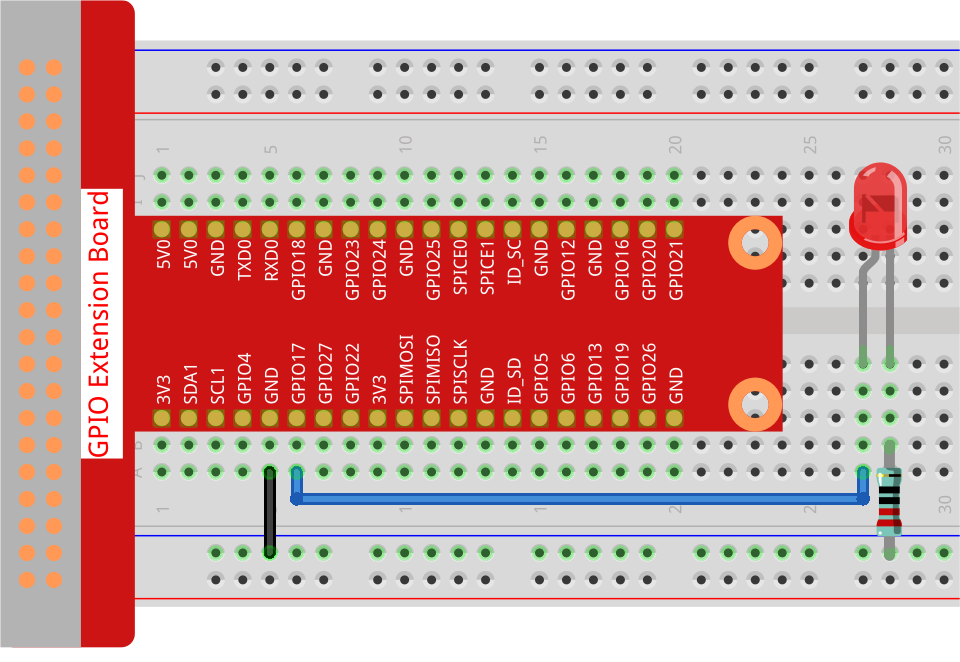

Note
Bonjour et bienvenue dans la communauté Facebook des passionnés de SunFounder Raspberry Pi, Arduino et ESP32 ! Plongez-vous plus profondément dans le monde du Raspberry Pi, Arduino et ESP32 avec d’autres passionnés.
Pourquoi nous rejoindre ?
Support d’experts : Résolvez vos problèmes après-vente et relevez les défis techniques avec l’aide de notre communauté et de notre équipe.
Apprendre et partager : Échangez des astuces et tutoriels pour perfectionner vos compétences.
Aperçus exclusifs : Bénéficiez d’un accès anticipé aux nouvelles annonces de produits.
Remises spéciales : Profitez de réductions exclusives sur nos nouveaux produits.
Promotions et cadeaux festifs : Participez à des tirages au sort et des promotions spéciales durant les fêtes.
👉 Prêt à explorer et créer avec nous ? Cliquez sur [Ici] et rejoignez-nous dès aujourd’hui !
1.1.1 LED Clignotante
Introduction
Dans ce projet, nous apprendrons à faire clignoter une LED par programmation. Grâce à vos paramètres, votre LED peut produire une série de phénomènes intéressants. C’est parti !
Composants nécessaires
Pour ce projet, nous aurons besoin des composants suivants :

Schéma de câblage
Dans cet exercice, nous connectons la broche GPIO 17 du Raspberry Pi à l’anode (patte longue) de la LED, puis la cathode (patte courte) de la LED à une résistance, et enfin l’autre extrémité de la résistance à la broche GND du Raspberry Pi. Pour allumer la LED, il faut régler GPIO17 sur l’état haut (3,3 V). Nous pouvons réaliser ce phénomène par la programmation.
Note
Pin11 fait référence à la 11e broche du Raspberry Pi de gauche à droite, et ses numéros de broche correspondants en BCM sont indiqués dans le tableau ci-dessous.
Dans le contexte de la programmation en Python, la broche GPIO 17 est désignée comme 17 dans la colonne BCM du tableau ci-dessous. Cela correspond également à la 11e broche physique sur le Raspberry Pi, appelée Pin 11.
T-Board Name |
physical |
BCM |
GPIO17 |
Pin 11 |
17 |

Procédure expérimentale
Étape 1 : Construire le circuit.
{kind=link}
Étape 2 : Accédez au dossier du code et exécutez-le.
Si vous utilisez un écran, nous vous recommandons de suivre les étapes suivantes.
Recherchez le fichier 1.1.1_BlinkingLed.py et double-cliquez pour l’ouvrir. Vous êtes maintenant dans le fichier.
Cliquez sur Run ->Run Module dans la fenêtre, et les résultats suivants apparaîtront.
Pour arrêter l’exécution, cliquez simplement sur le bouton X en haut à droite pour le fermer, et vous reviendrez au code. Si vous modifiez le code, avant de cliquer sur Run Module (F5), vous devez d’abord l’enregistrer. Ensuite, vous verrez le résultat de vos modifications.
Si vous vous connectez à distance au Raspberry Pi, tapez la commande suivante :
cd ~/davinci-kit-for-raspberry-pi/python-pi5
Note
Changez de répertoire pour accéder au chemin du code de cet exercice via cd.
Étape 3 : Exécutez le code.
sudo python3 1.1.1_BlinkingLed.py
Note
Ici, sudo signifie « superuser do » (super utilisateur), et python indique d’exécuter le fichier avec Python.
Après l’exécution du code, vous verrez la LED clignoter.
Étape 4 : Si vous souhaitez modifier le fichier de code 1.1.1_BlinkingLed.py,
appuyez sur Ctrl + C pour arrêter l’exécution du code. Puis tapez la commande suivante
pour ouvrir 1.1.1_BlinkingLed.py :
nano 1.1.1_BlinkingLed.py
Note
nano est un éditeur de texte. La commande est utilisée pour ouvrir le fichier de code 1.1.1_BlinkingLed.py avec cet outil.
Appuyez sur Ctrl+X pour quitter. Si vous avez modifié le code, une invite vous
demandera si vous souhaitez enregistrer les modifications. Tapez Y (enregistrer)
ou N (ne pas enregistrer).
Ensuite, appuyez sur Entrée pour quitter. Tapez de nouveau
nano 1.1.1_BlinkingLed.py pour voir l’effet après les modifications.
Avertissement
Si vous recevez une erreur du type RuntimeError: Cannot determine SOC peripheral base address, veuillez consulter Si gpiozero ne fonctionne pas..
Code
Voici le code du programme :
Note
Vous pouvez Modifier/Réinitialiser/Copier/Exécuter/Arrêter le code ci-dessous. Mais avant cela, vous devez accéder au chemin source du code comme davinci-kit-for-raspberry-pi/python-pi5. Après modification du code, vous pouvez l’exécuter directement pour voir l’effet.
#!/usr/bin/env python3
from gpiozero import LED
from time import sleep
# Initialisation d'une LED connectée à la broche GPIO 17 en utilisant la bibliothèque GPIO Zero.
led = LED(17)
try:
# Démarrage d'une boucle infinie pour alterner l'état de la LED.
while True:
# Allume la LED et affiche un message dans la console.
led.on()
print('...LED ON')
# Attends 0,5 seconde avec la LED allumée.
sleep(0.5)
# Éteint la LED et affiche un message dans la console.
led.off()
print('LED OFF...')
# Attends 0,5 seconde avec la LED éteinte.
sleep(0.5)
except KeyboardInterrupt:
# Gère proprement une interruption du clavier (Ctrl+C) en sortant de la boucle.
# GPIO Zero gère automatiquement le nettoyage des paramètres GPIO à la sortie.
pass
Explication du code
#. Quand le système détecte cela, il recherche le chemin d’installation de python dans
la variable env, puis appelle l’interpréteur correspondant pour effectuer l’opération.
Cela permet d’éviter que l’utilisateur n’installe pas Python dans le chemin par défaut /usr/bin.
#!/usr/bin/env python3
#. Ces lignes importent les classes et fonctions nécessaires : LED de gpiozero pour
le contrôle de la LED, et sleep de time pour les pauses.
from gpiozero import LED from time import sleep
Cette ligne crée un objet LED connecté à la broche GPIO 17.
# Initialisation d'une LED connectée à la broche GPIO 17. led = LED(17)
#. Une boucle infinie est démarrée avec while True:. À l’intérieur de la boucle,
la LED s’allume (led.on()) et un message est affiché. Le programme attend alors 0,5
seconde (sleep(0.5)). Ensuite, la LED s’éteint (led.off()), un autre message est
affiché et le programme attend encore 0,5 seconde.
try: # Démarrage d'une boucle infinie pour alterner l'état de la LED. while True: # Allume la LED et affiche un message dans la console. led.on() print('...LED ON') # Attends 0,5 seconde avec la LED allumée. sleep(0.5) # Éteint la LED et affiche un message dans la console. led.off() print('LED OFF...') # Attends 0,5 seconde avec la LED éteinte. sleep(0.5)
Le bloc
exceptintercepte uneKeyboardInterrupt(par exemple en appuyant sur Ctrl+C) et quitte proprement la boucle. L’instructionpassest utilisée ici comme un espace réservé indiquant qu’aucune action spécifique n’est effectuée en cas d’interruption.except KeyboardInterrupt: # Gère proprement une interruption du clavier (Ctrl+C) en sortant de la boucle. # GPIO Zero gère automatiquement le nettoyage des paramètres GPIO à la sortie. pass